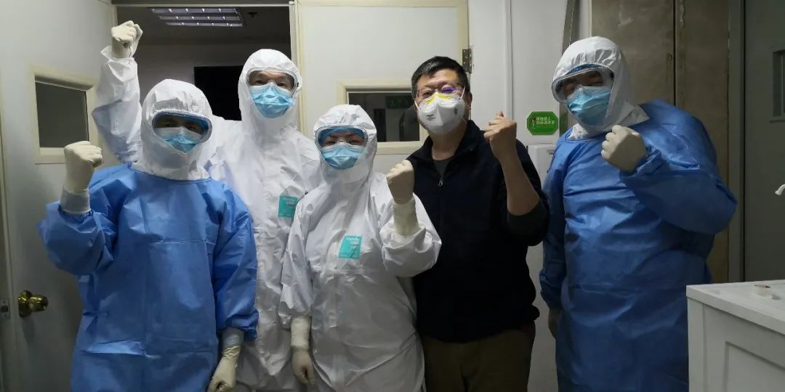
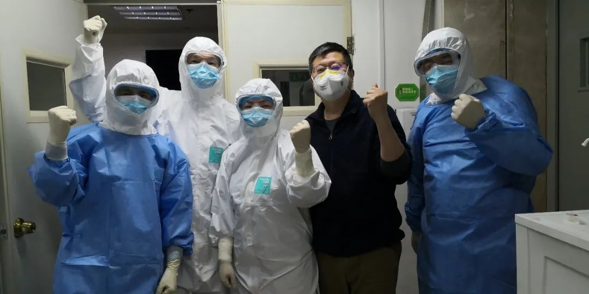

首例新冠遗体解剖结果将公布，手术前这个举动不一般
原文链接 备份链接 **微信公号“央视新闻”** 自2月16日凌晨完成第一例新冠肺炎逝者遗体解剖之后，华中科技大学同济医学院法医系教授、湖北省司法鉴定协会会长刘良与其团队至今已经获得了9例逝者的病理样本。日前，央视记者就新冠肺炎逝者遗体解 …
 *************▲*************刘良和他的团队，右二为刘良。 （校方供图/图）
*************▲*************刘良和他的团队，右二为刘良。 （校方供图/图）
全文共1927字，阅读大约需要5分钟。
临床治疗上，如果粘液没有被化解的情况下给患者单纯给氧，可能达不到目的，有时还会起反作用。
2003年为应对SARS疫情，北京和广东曾专门建设过符合生物安全要求的负压解剖室，但此后长期没有再发生类似疫情，那些解剖室就几乎荒废了，“据我所知，目前国内几乎没有达标的解剖室”。
本文首发于南方周末 未经授权 不得转载
文 | 南方周末记者 张笛扬
责任编辑 | 吴筱羽
三例新冠肺炎逝者的遗体解剖和病理学分析已经完成。
2020年2月16日，全国首例新冠肺炎逝者遗体解剖工作在武汉市金银潭医院结束，由湖北省司法鉴定协会会长、华中科技大学同济医学院法医病理学教授刘良及其团队完成。截至2月24日，刘良及其团队共解剖了9例新冠肺炎患者遗体。
刘良透露，其团队和华中科技大学附属同济医院病理科教授王国平的团队合作，已完成3例病理检查诊断工作，详细的解剖报告将在近日发布。剩余6例还有待免疫组化、特殊染色等更深入的检查研究。
2月24日晚，刘良和王国平在线接受了包括南方周末在内的媒体采访。
1
“新冠肺炎是新发疾病，我们之前对它的发病机制、致死机制没有很多研究。病毒到底攻击人体哪一个器官、组织、细胞，也是不清楚的。”刘良解释，对新冠肺炎死亡患者遗体的解剖有助于厘清这些问题。
刘良团队解剖的9例遗体中，男女比例基本相当，但年龄偏大，多在60-70岁，年纪最大的超过80岁，最小的是52岁。
目前，刘良和王国平的团队已完成其中3例的病理检查诊断。
刘良告诉南方周末记者，新冠肺炎和SARS病毒引发的肺炎在病变上有相似性，但新冠肺炎也有其特点。
显微镜下，刘良在新冠肺炎死者的肺部切片发现，其中有很多粘液性的分泌物。“分泌物的出现，说明临床治疗是要提高警惕的。”
新冠肺炎患者的肺泡功能会受到损伤，气道如果又被粘液堵住了，临床上就会出现缺氧的表现。刘良表示，“若要改善患者的缺氧状态，需要把气道打通，必须把粘液稀释、溶解。”
刘良强调，临床治疗上，如果粘液没有被化解的情况下给患者单纯给氧，可能达不到目的，有时还会起反作用。“正压给氧的话，可能会把粘液推得更深、更广，会加重患者的缺氧。”
此外，从解剖案例中发现，新冠肺炎的病变不仅会损害肺，还可能对免疫系统和身体其他器官造成损害。
新冠肺炎患者的遗体解剖也有利于揭示病毒的传播途径。刘良团队在解剖时对患者的不同器官做了核酸检测。他表示，“在一些器官上发现了病毒，也有些器官排除了，但不同病例、不同脏器的结果还不太一致，这些问题还要进一步分析。”
之前有学者曾提出，一些新冠肺炎重症患者会暴发心肌炎或俗称“心碎综合征”的应激性心肌病。刘良回应称，新冠肺炎导致暴发性心肌炎的可能还需进一步讨论，但导致“心碎综合征”的可能性较小。
除刘良团队外，目前武汉还有上海瑞金医院为主体的一个团队在做新冠肺炎逝者的遗体解剖工作，已解剖了两例。王国平表示，“从科学研究角度上讲，解剖的数量越多越好，现在一共有11例，反映的结果可以从一定程度上说明问题了。”
2
59岁的刘良从事法医病理学工作已有三十多年，曾参与多个要案的尸检工作，如武汉理工大学程树良教授嫖娼致死案、湖北巴东县冉建新提审猝死案等，在安徽黄山“陷警门”案中，刘良还曾作为刑诉法修订后的第一位专家辅助人出庭作证。
17年前，刘良也曾对SARS逝者做过遗体解剖。令他印象深刻的是，SARS期间的病理解剖比现在还要快一点，在国内出现死亡病例的十几天后，病理解剖就已启动。
新冠肺炎疫情暴发后，刘良的团队在1月24日向湖北省有关部门提交了报告，强调了尸检的必要性和可行性。29日，他们收到了同意的批复。
刘良随后联系了多家医院，“所有医生都说这个好，但涉及特定方案的时候，医院需要请示汇报”。此外，医院缺少解剖所需场地，同时也担心解剖风险。
刘良很着急，如果不及时做病理解剖的话，“对抢救治疗有延误，对将来的研究也有影响”。之后，他在多个场合公开呼吁解剖的必要性。
2月15日，国家卫健委医政医管局邀请刘良参加新冠肺炎尸检相关事宜会议。
2月15日21:00，刘良接到金银潭医院院长张定宇的电话，“有一个可以做解剖了”。16日凌晨3:50，在金银潭医院的负压手术室内，刘良完成了首例患者遗体解剖，14小时后，他们又完成了第二例遗体解剖工作。解剖前，刘良和他的团队会专门向遗体默哀。
解剖新冠肺炎患者的遗体需要较高等级的防护设备，在物资紧张的武汉，刘良团队同样面临缺少防护物资的局面。
做完几例解剖工作后，刘良感受到，通过媒体宣传，患者和家属更了解了遗体解剖，有临床医生向他反映，现在跟家属沟通遗体捐赠时，家属的接受度比以前好。
但解剖场地还是没能解决。“解剖室不达标的话，会导致解剖的延缓和对解剖担忧。”刘良介绍，2003年为应对SARS疫情，北京和广东曾专门建设过符合生物安全要求的负压解剖室，但此后长期没有再发生类似疫情，那些解剖室就几乎荒废了，“据我所知，目前国内几乎没有达标的解剖室”。
“不能再出现像今天这样的滞后局面了。”刘良建议，为应对突发疫情，各地区都应建设达标的尸检室。


原文链接 备份链接 **微信公号“央视新闻”** 自2月16日凌晨完成第一例新冠肺炎逝者遗体解剖之后，华中科技大学同济医学院法医系教授、湖北省司法鉴定协会会长刘良与其团队至今已经获得了9例逝者的病理样本。日前，央视记者就新冠肺炎逝者遗体解 …
原文链接 备份链接 澎湃新闻 综合报道 2月16日，武汉。在法律政策允许下，两例新冠逝者遗体解剖工作在金银潭医院完成，由解剖获得的新冠肺炎病理，目前已被送检。 澎湃新闻记者 祝文博 编辑 张兆亿 视频来源 相关人士 责任编辑：周宽玮 据参 …
原文链接 备份链接 记者/韩谦 魏晓涵 *编辑/石爱华宋建华* 进行病理解剖的刘良团队 经历了一个多月的等待后，华中科技大学同济医学院法医病理学教授刘良带领的团队，于2月16日凌晨3点50分，完成了第一例新冠肺炎死亡病例的尸体解剖。 截 …
原文链接 备份链接 “病理诊断是疾病诊断的金标准”2月16日凌晨3点50分，全国首例新冠病毒肺炎患者遗体解剖工作在武汉市金银潭医院顺利结束，由华中科技大学同济医学院法医病理学教授刘良及其团队完成，14小时后，他们又完成了第二例遗体解剖 …
原文链接 备份链接 2 月 17 日，《柳叶刀 · 呼吸医学》（_The Lancet Respiratory Medicine_）在线发表了首份基于尸检样本的新冠肺炎病理学报告。 该论文通讯作者之一为中科院院士、解放军总医院第五医学中心 …